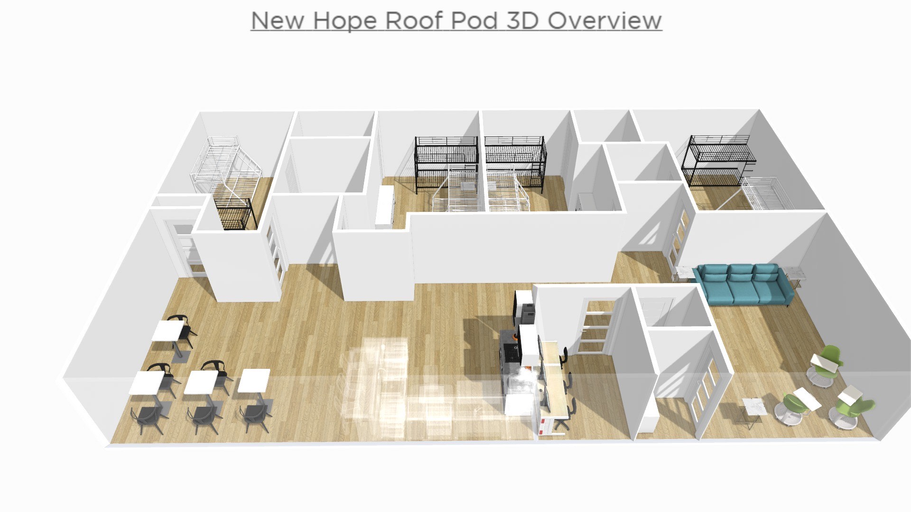
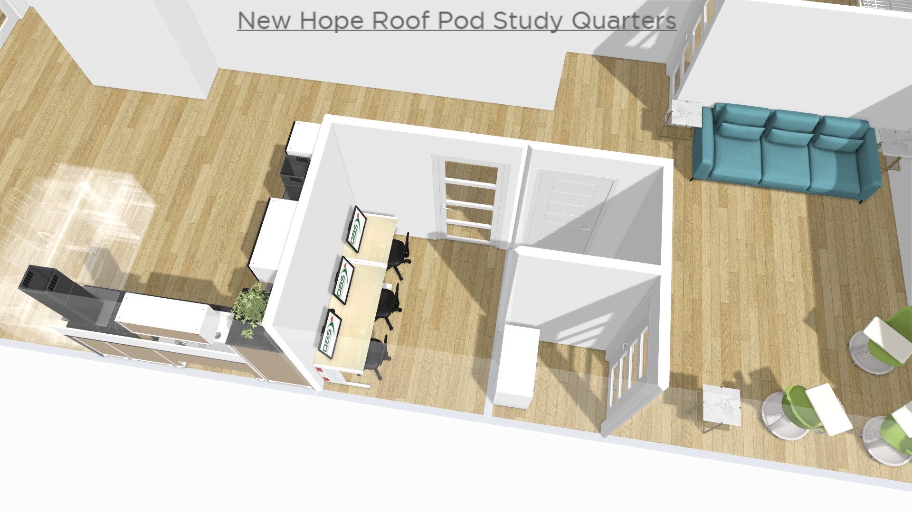

Recent Work
New Hope for Families
Jan 2022 - May 2022
Served as Roof Intern & Volunteer Project Coordinator. Fostered non-profit relationships with Target & Lowes, at local Bloomington locations. Created 3D&2D graphic models of new shelter space locations. Project coordinated IU service clubs, IU Greek life, local businesses, religious groups, and Bloomington native volunteers through weekly service opportunities. Campaigned advocacy of US homeless populations across the Indiana University campus.
New Hope, Emergency Housing Shelter for Families Experiencing Homelessness - Overview of Floorplans
To the left of this text is one of the 3D floorplans I created through Planner5D. During my internship with NewHope, the nonprofit was experiencing a transitional period into new emergency housing sites. These floorplans were used to guide volunteers through the furnishing and modeling of New Hope's brand new housing pods. The site hosts three pods, all of which can house four families, with up to five individuals per family.
The image to the right of this text is a focused screenshot of a New Hope study quarter. These study quarters are available in every housing pod; serving the purpose to advance each family's access to internet, and digital education. My time with New Hope remains dear to my heart, and is stored as a core memory as what is possible when geniune love is poured into communities facing homelessness.
Bloomington Animal Shelter
Feb 2022 - May 2022
Voluntered as an active foster team member. Fostered an adult feline, which required medical attention for ongoing health conditions regarding a damaged neck. Fostered a pregnant, adult feline - assisting through the birth of six kittens.
Private Home Healthcare
Feb 2020 - Feb 2022
Provided private home healthcare. Treated beloved patients; two elderly individuals, one requiring medical aid as an eight year tracheotomy patient, both suffering early ages of dementia. Administered medication; respiratory treatment, daily pills, physical therapy, mental stimulation, as well as cared for dietary necessities.
American School of Doha
May 2020 - Aug 2020
Worked with the Office of Admissions through a summer internship. Administered the transfer of application websites from Portal to Open Apply, while partnering with the ASD department of technology for continual program upgrades. Dissolved escalating issues with applicants from an arrangement of 70+ countries represented at ASD. Solved US Embassy as well as corporate sponsor situations through procedural website and personalized student applications. Assisted, trained, and collaborated with colleagues in the Office of Administrations - while the Director and academic staff were dislocated due to COVID-19 border entry complications.